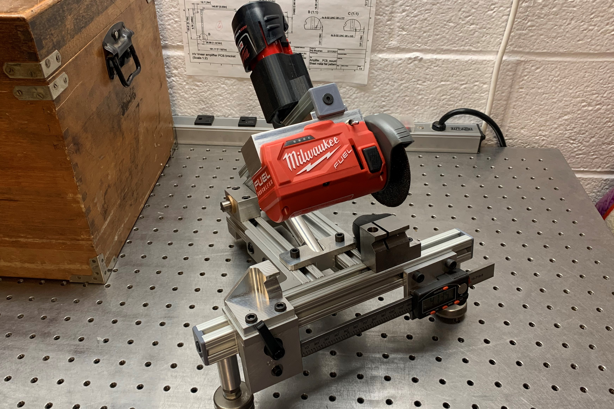

The machined block that mounts to the top of the head of the milwaukee saw, replacing that part of the injection molded housing.
Abrasive Ejector Pin Saw (Fall 2021)
Trimming hardened ejector pins to length

During my work as a TA/LA for 2.008, MIT's manufacturing class for mechanical engineers, I designed and built this ejector pin saw. We teach the students how to injection mold, but they occasionally crush and destroy ejector pins if they don't set up the machine correctly. Additionally, we stocked over a dozen lengths of ejector pin. We typically purchased very long ejector pins, and trimmed them to length as students ruined them. This trimming was previously being done with a lathe, which was very slow and difficult to get the length consistent. We could have used adjustable collet stops or similar solutions, but we decided we wanted something much easier and faster, so I took the task of making this saw.
The machined block that mounts to the top of the head of the milwaukee saw, replacing that part of the injection molded housing.
The base of the saw was a Milwaukee 3" abrasive saw, which got me the motor, bearings, arbor, guard, and the basic speed control circuitry. I took it apart and took only the head of the original saw, containing the motor and spindle, and made a new machined aluminum cap that attached to the top where the handle previously had attached. I replaced the trigger switch and potentiometer with a small toggle switch and fixed resistor, so it would just run at a constant speed. It still uses Milwaukee 12V batteries, but I 3d printed a socket that could hold the battery, because the original battery socket was in the base of the saw's handle.

The adjustable V-blocks support the ejector pin against cutting forces. Forces are low enough that the user can just hold the pin by hand.
The frame of the cutoff saw was just made from Aluminum extrusion laying around the shop, and the adjustable v-block was mounted on a convenient sliding clamp that we also had already. The bearing blocks for the chop motion as well as the return spring were made myself. The return spring is adjustable at both ends, which means that the torque on the arm could be adjusted both in initial magnitude and rate. The fixed block was attached directly to the rail, and was initially solid, and then I cut the slot into it using the saw itself. This keeps the ejector pin completely supported on both sides. A small dust chute was 3D printed and attached to the back of the block to try to catch as much of the grinding dust as possible. In the future, a stronger version of this chute will be made, and we can attach a vacuum to it for better dust collection.

The 3D printed dust chute on the back of the fixed V-block.